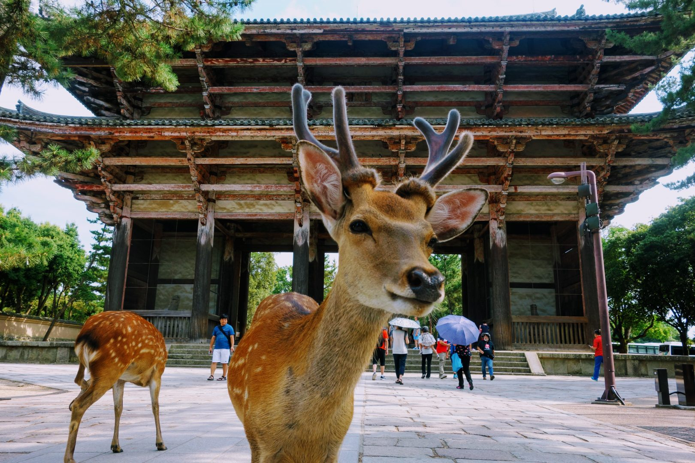

Nara - Cidade Cultural
Lar de veados adoráveis, templos e muito mais! Nenhuma lista das principais atrações do Japão pode ser completa sem incluir Nara nela. Lar de muitos santuários, mosteiros, museus e do famoso Parque Nara, esta cidade é onde você precisa estar para se familiarizar com a famosa cultura e tradições japonesas. Definitivamente está na lista de lugares imperdíveis para visitar no Japão.